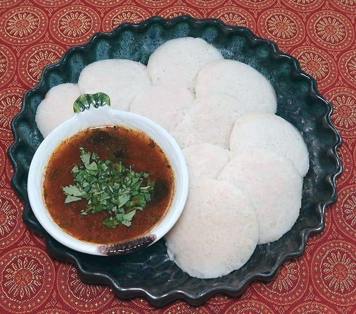
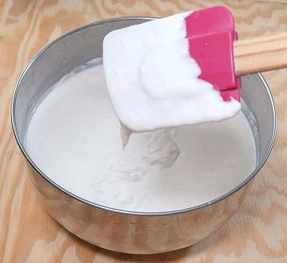
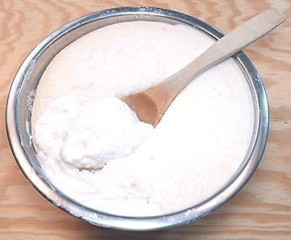
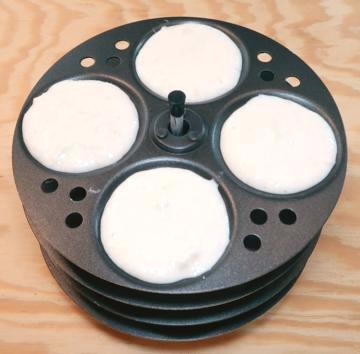
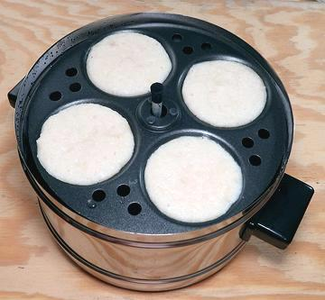

Bowl of freshly mixed Rice/Urad batter. It's still a little
to thick and needs a touch more water stirred in. Too little water and it
won't ferment well.

Bowl of fermented Rice/Urad batter.

Idli Steamer Tray loaded with Batter.

Idli Steamer with Cooked Idlis.